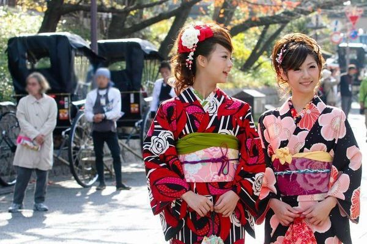
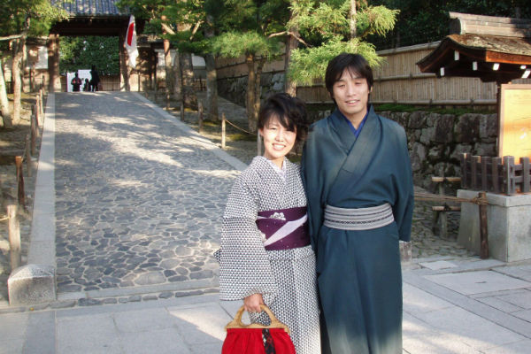
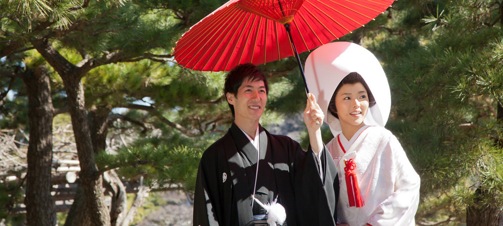
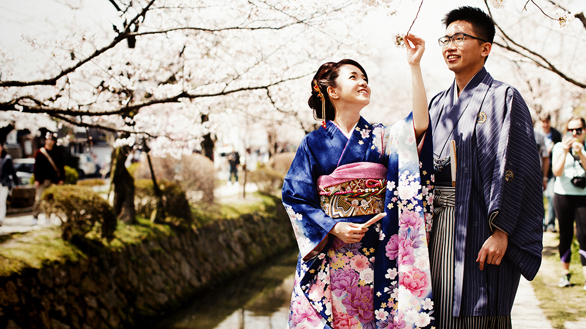
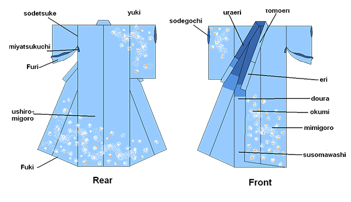
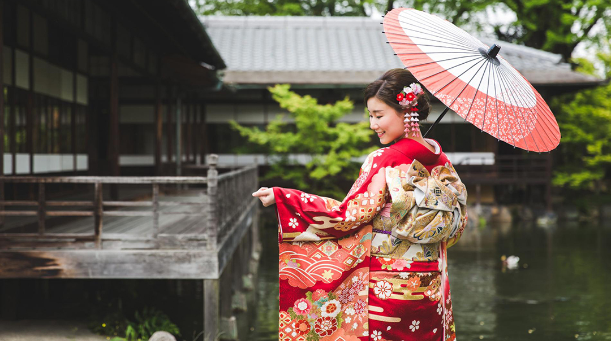
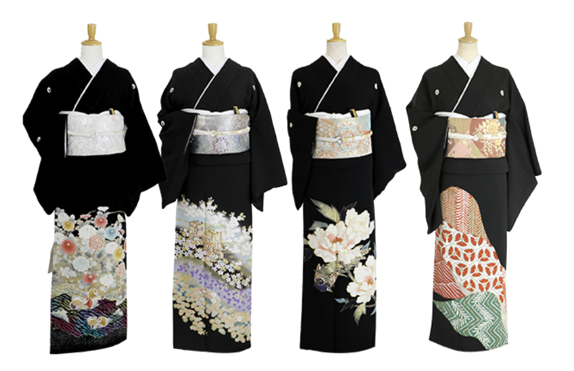
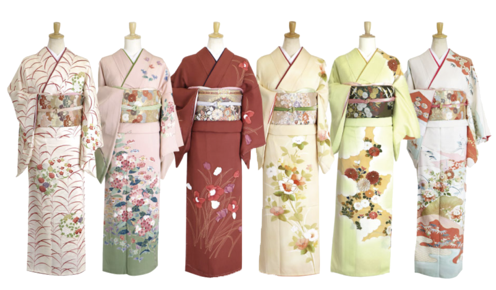
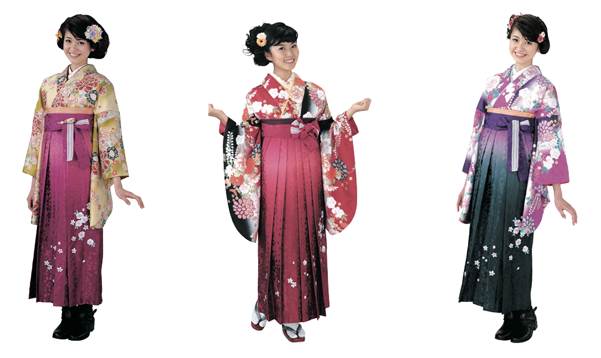
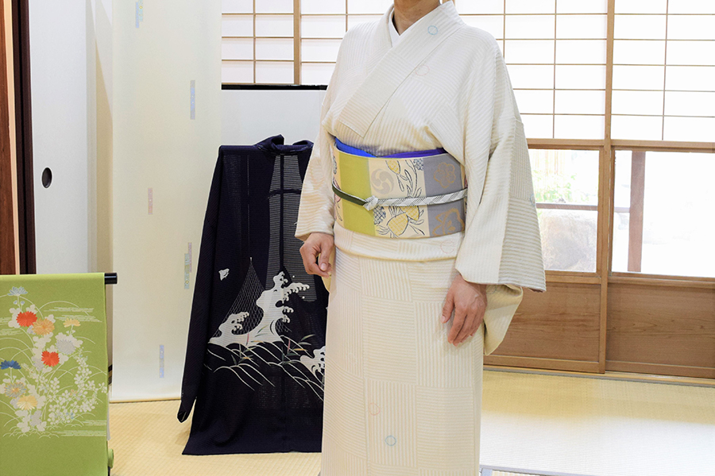

The Japanese kimono is one of the world's instantly recognizable traditional
garments. The word kimono literally means "clothing", and up until the mid 19th century it was the
form of dress worn by everyone in Japan. That began to change slowly with the import of suits
dresses and other western fashions during the Meiji Era.

Kimono fashion can range from very colorful...

...to quite plain and simple.
Thanks to the popularity of ukiyo-e woodblock prints in the West at the beginning of the last
century, the kimono-clad maiden became one of the quintessential images of Japan. Dressing up in the
kimono and other accoutrements of the geisha or maiko is still one of the more popular activities
for visiting
tourists.

A bride and groom in wedding kimono
There are different types of kimono for different occasions and seasons, including those worn by men.
Other than those worn daily by some older people or performers of traditional arts, kimono are a
much less common sight these days but are still widely worn on special occasions such as weddings
and graduation ceremonies.
Part of the reason is the cost, as a decent silk kimono will set you back the best part of a million
yen. But there is also the question of how to put on the kimono and tie the obi (decorative sash), a
complicated procedure that is beyond the ability of many young women. They usually have to ask their
mothers to help them or take course at a kimono school.
What is the history of Japanese kimono?

Though the kimono is a decidedly Japanese form of dress, it is said that its roots are from China. The
earliest form of kimono were worn as a type of undergarment, gaining popularity in Japan during the
Muromachi period (1392–1573), when they began to be worn without hakama (traditional Japanese trousers),
and paired with a sash called an obi.
It wasn't until the Edo period (1603–1867) that the kimono as we know it today really came into its own,
with an ever-expanding variety of colors, fabrics, and styles available. The obi became wider, and the
length of the kimono sleeves grew as well. Kimono are typically only worn by women or girls, however,
there are some exceptions.
So how is a kimono put together?
Parts of a Kimono

yuki - sleeve length
ushiromigoro - rear main section
uraeri - inner collar
doura - upper lining
sodetsuke - armhole seam
fuki - hem guard
sode - sleeve
okumi - front panel below the collar
miyatsukuchi - opening below armhole
sodeguchi - sleeve opening
tamoto - sleeve pouch
maemigoro - front main section
furi - sleeve below armhole
tomoeri - overcollar
eri - collar
susomawashi - lower lining
Kimono Accessories
There are several elements involved when wearing a kimono. To understand a kimono, it’s important to
know
the pieces involved. The following are some of the main parts involved in wearing a kimono.
・Kimono - This is the main garment, which can be made from a variety of materials including, cotton,
linen, wool, and silk.
・Obi - The outermost sash that is tied around a kimono. The knot can be tied in a variety of
decorative
ways.
・Juban - A type of undergarment used specifically with kimono.
・Koshi-himo - A sash that is tied at the waist to secure the kimono in place.
・Datejime - A belt that is fastened over the kimono, but under the obi, which helps the obi keep its
shape.
・Tabi - Socks made specifically to be worn with traditional Japanese footwear. The toe area is split
into two sections.
・Geta, Zori - These are some of the traditional types of footwear worn with kimono. They somewhat
resemble modern sandals.
What kinds of Japanese Kimono are there and when are they worn?
Furisode
This is the type of kimono worn by younger, unmarried women and girls. It is distinguishable by its
long sleeves and often comes in bright colors. Furisode is the typical kimono worn duringJapan’s
Coming of Age Day (‘Seijin no Hi’).

Kyoto Furisode
Tomesode
A formal kimono that’s worn by women who are married. It may be decorated in intricate crests and
patterns, however these decorations are typically found below the waist. Mothers traditionally wear
a black tomesode at their child’s wedding. There are also colored tomesode, which are sometimes worn
by single women on occasion.

Tomesode
Houmongi
Literally meaning “visiting kimono,” a houmongi is a type of kimono that’s suitable for any age and
marital status. You can identify this kimono by the patterns that run over the shoulders, and across
its bottom. This type of kimono may be worn to attend a wedding or tea ceremony.

Houmongi
Hakama
A formal kimono that’s worn by women who are married. It may be decorated in intricate crests and
patterns, however these decorations are typically found below the waist. Mothers traditionally wear
a black tomesode at their child’s wedding. There are also colored tomesode, which are sometimes worn
by single women on occasion.

Hakama
Komon
Another type of casual kimono. A komon is usually decorated in a repeated pattern. The komon is
perfect, casual daywear, as it was the common everyday garment in the days before Western clothing
became the standard wear.

Komon
Yukata
These are the kimono most often seen at Japanese summer festivals. Yukata are made of thin material,
and suitable for both women and men. However, men’s yukata are typically not as colorful, nor as
flashy as the ones worn by women.